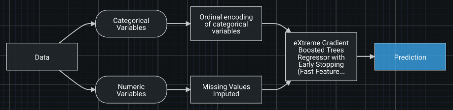

Make the most efficient air quality prediction
For the poor countries
Nowadays, climate change and air pollution are important issues facing us that are closely interlinked. Air pollutants include not only greenhouse gases but also methane, nitrous oxide and others. Emissions of them into the air can result in changes to the climate. For instance, when the pollution lands on ice and snow, it darkens them slightly, leading to less sunlight being reflected back into space and contributing to global warming.
Many environmental problems related to air pollution can be addressed by monitoring air quality and air pollutants. Specifically, quantification of particulate matter (PM) is crucial. According to the World Health Organization (WHO), each year an estimated 4.2 million people die from diseases such as lung cancer, chronic respiratory diseases, and heart disease caused by ambient air pollution. The particles in air with a diameter less than 2.5 micrometers, i.e. PM2.5, are mainly to blame for the serious health hazard, as the type of particles measured are so small that they can reach the bloodstream and can hurt the lungs and heart.
Currently, about 90% of the world’s population lives in regions where air quality levels exceed WHO limits. While there is such a large portion of the population suffering from the severe air quality problem, the air quality measurements are concentrated in the developed countries. The high-end techniques and associated expense for PM2.5 monitoring put up barriers for many countries, i.e. low- and middle-income countries where the population is more prone to diseases.
And We Are Going To Change This
Power of Data
that's already there
It's the most efficient way to build our model base on the weather data, .
Machine Learning
for better prediction
Machine learning methods are used throughtout this project, including: KNN, Logistic Regression, K-means, Classification Trees.
Data Robot
to optimize the model
Data Robot gives us a optimized model
Through this path.